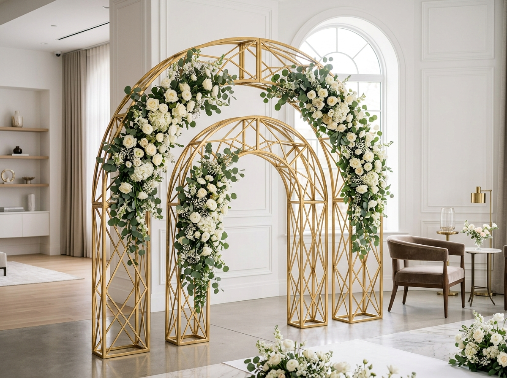

Estruturas pensadas para dar liberdade à sua criação. Conheça diferentes modelos para ampliar as possibilidades do seu acervo e criar novas composições em cada projeto.
Conexões inteligentes que permitem montagem em minutos sem ferramentas pesadas e fácil encaixe em furgões de eventos.
Tratamento anticorrosivo e pintura em pó curada a quente que não lasca nem perde o brilho após centenas de locações.
De casamentos clássicos e rústicos a galas corporativas e aniversários infantis: uma mesma peça ganha nova vida com diferentes composições.
Clique em cada peça para conferir detalhes técnicos, dimensões e acabamentos.